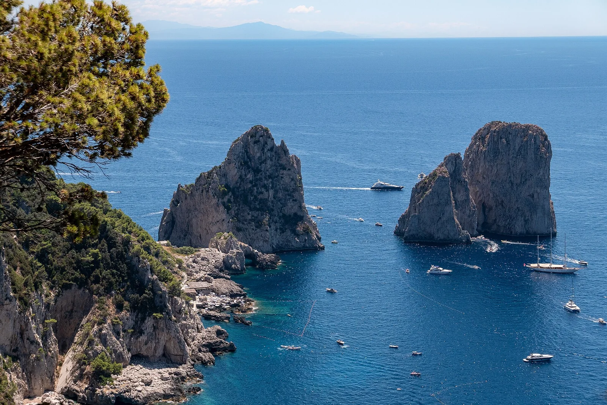

Capri
Italie · kayak, snorkeling, baignade

Île célèbre du golfe de Naples : eaux bleues, Grotte Bleue et criques à explorer en kayak ou en snorkeling.
- Lieu
- Italie
- Niveau
- Débutant
- Activités
- kayak, snorkeling, baignade
- Type d'eau
- Mer / océan
- Coordonnées
- 40.55, 14.24 (position approximative du secteur)
Dangers à connaître
- Beaucoup de bateaux l’été.
- Entrées rocheuses.
Le conseil d'Ocean Buddy
Tôt le matin pour la Grotte Bleue, avant la foule.
Ouvrir dans Ocean Buddy Télécharger sur l'App Store
Source : Description historique Ocean Buddy · vérification externe en attente.